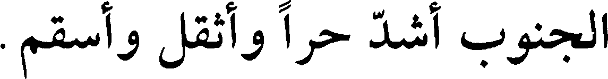
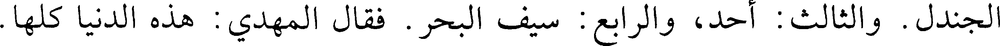
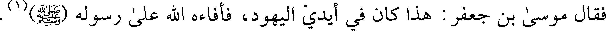
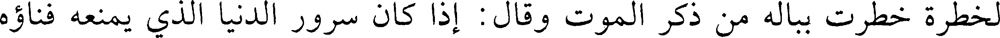
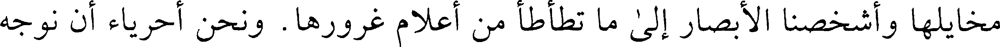

000613.gt.txt

وأهل خراسان أهل غفلة وبخل وحرص وشجاعة.
000614.gt.txt

وقال بقراط في كتاب الأهوية والأبدان: إن ما كان من الأمصار مقابل شرق
000615.gt.txt

الشمس. فرياحه سليمة وماؤه عذب وأهله قلما يضرهم تغير الهواء. وكان يقول:
000616.gt.txt

المياه التي تنبع من مواضع مشرقة ومن تلاع وروابي، أفضل المياه وأصحها، وهي
000617.gt.txt

عذبة. وبلدها أصح البلاد، لا يحتاج إلى كثرة مزج الشراب، ولا سيما الشرقي
000618.gt.txt

الصيفي. لأنها تكون براقة طيبة الريح اضطرارا.
000619.gt.txt

وقال فسطوس في كتاب الفلاحة: أصلح مواضع البنيان أن يكون على تل أو
000620.gt.txt

كبس (1) وثيق ليكون مطلا. وأحق ما جعلت إليه أبواب المنازل وأفنيتها وكواها،
000621.gt.txt

436
000622.gt.txt

المشرق واستقباله الصبا. فإن في ذلك صلاح الأبدان لسرعة طلوع الشمس ومرها
000623.gt.txt

عليهم. وأن توسع البيوت ويرفع سمكها وتكون أبوابها إلى المشرق. لأن ريح
000624.gt.txt

الجنوب أشد حرا وأثقل وأسقم.
000625.gt.txt

وأصح البلدان ما كانت على رؤوس الجبال والأماكن التي تواجه مهب
000626.gt.txt

الصبا. وما كان في قعور وأغوار ومواجهة لريح الجنوب أو الدبور، فهي مواضع
000627.gt.txt

رديئة مولدة للأمراض.
000628.gt.txt

والصواب أن تتخذ الدور بين الماء والمشرق وأن تكون شرقية، والبساتين
000629.gt.txt

غربية. ومن قرب منزله من النهر كان أقل انية ممن [102 أ] بعد عنه. وقالوا:
000630.gt.txt

لتكن دوركم شرقية وضياعكم غربية. وقال ابن كلدة: جميع خصال الدار، أن
000631.gt.txt

تكون على طريق نافذ وماؤها يخرج، وليس عليها متشرف، وحدودها لها، وتكون
000632.gt.txt

بين الماء والسوق. وتصلح أفنيتها لحط الرجال وبل الطين وموقف الدواب. وإن
000633.gt.txt

كان لها بابان فذلك أمثل.
000634.gt.txt

وكان إياس بن معاوية يقول: شرقي كل بلد خير وأفضل من غربيه.
000635.gt.txt

وكان يقال: الجار ثم الدار، كما الرفيق قبل الطريق.
000636.gt.txt

وقال يحيى بن خالد: دار الرجل دنياه. فينبغي أن يتنوق في دهليزه فإنه وجه
000637.gt.txt

داره ومنزل ضيفه ومجلس صديقه إلى أن يؤذن له. ومستراح خدمه وموضع مؤدب
000638.gt.txt
ولده ومنتهى حد المستأذن.
000639.gt.txt

ولما قدم موسى بن جعفر على المهدي، كلمه في رد فدك. فقال له: أنا
000640.gt.txt

ناظر في ذلك، ولكن أين حدودها؟ قال: أما الأول فعريش مصر. والثاني: دومة
000641.gt.txt

الجندل. والثالث: أحد، والرابع: سيف البحر. فقال المهدي: هذه الدنيا كلها.
000642.gt.txt

فقال موسى بن جعفر: هذا كان في أيدي اليهود، فأفاءه الله على رسوله (صعلم) (1) .
000643.gt.txt

437
000644.gt.txt

وكان على رجل من ثقيف دين فطولب به. فقال له الحسن البصري: بع
000645.gt.txt

أرضك واقض دينك وأربح نفسك. فقال: يا أبا سعيد! إنا أهل بيت لا نبيع التراب
000646.gt.txt

حتى نصل إلى التراب.
000647.gt.txt

وقال عيسى بن بشر الكوفي: أردت شراء دار فسألت جعفر بن محمد رضي
000648.gt.txt

الله عنه (1) عن ذلك، فقال: اشترها. فإن الدار مكرمة.
000649.gt.txt

وفي بعض الخبر قال: من قدم بلدا فأخذ من ترابه وجعله في مائه وشربه،
000650.gt.txt

عوفي من وبائه.
000651.gt.txt

وقال قتيبة بن مسلم للحصين بن المنذر: ما السرور؟ قال: امرأة حسناء ودار
000652.gt.txt

قوراء وفرس مرتبط بالفناء.
000653.gt.txt

وقيل لرجل بنى دارا وأعظم النفقة عليها: ما أشد ما مر عليك في بناء هذه
000654.gt.txt

الدار؟ قال: أشد ذلك جمعا قائما، الفعلة. وأسهل الأمور النفقة.
000655.gt.txt

وقال بعضهم: سعة الدار تزيد في عقل الرجل، كما أن ضيقها ينقص من
000656.gt.txt

عقله. وذلك أن الرجل إذا كان ضيق المسكن فدخل إليه داخل قصف عقله عند
000657.gt.txt

حرمه مخافة أن تبدو منهن عورة أو يظهر منهن ما لا يحب ظهوره. فإذا كان واسع
000658.gt.txt

المسكن [102 ب] فجميع عقله معه.
000659.gt.txt

وذكر بهبود بن القردمان أنه لما فرغ من بناء الدار التي بنيت لأنوشروان
000660.gt.txt

بالمدينة العتيقة أعلم بذلك فأمر المنجمين باختيار يوم لينتقل إليها فيه. ففعلوا
000661.gt.txt

ذلك. فلما دخلها وقد نصب سريره وسدلت ستوره وهيئ له تاجه. فلما استوى
000662.gt.txt

438
000663.gt.txt

على السرير ورأى بهاءها وحسنها وجلالة فرشها وآلتها، استعبر عند ذلك باكيا
000664.gt.txt

لخطرة خطرت بباله من ذكر الموت وقال: إذا كان سرور الدنيا الذي يمنعه فناؤه
000665.gt.txt

وكثرة ما ينوبه من العاهات، فكيف بسرور الآخرة مع بقائه وخلوصه من كل
000666.gt.txt

مكروه؟ وإن في هذا لعبرة ينبغي أن لا تسقط على ذي حجى فيرفض الكثير الفاني
000667.gt.txt

القليل الباقي (1) . وما أحسبنا إلا ونجد أشرفنا من الدنيا فيما رفضنا من مخفوض
000668.gt.txt

مخايلها وأشخصنا الأبصار إلى ما تطأطأ من أعلام غرورها. ونحن أحرياء أن نوجه
000669.gt.txt

ذلك جهته، فيكون غفرانا لما بلغته الدنيا فينا من نهمتها.
000670.gt.txt

ثم قال: أيها الناس! إن الذي بلغنا منه بأقصى قدرتنا لا يمتنع من الخراب
000671.gt.txt

والبلى بتوزيعنا إياه وفقده إيانا، وان مداه قليل الغناء عند طول الأجل منا.
000672.gt.txt

ثم نادى مناديه ان الملك يعزم على كل من حضر إلا قام فأخبر بعيب ان
000673.gt.txt

عرفه في بناء الملك فأحجم الناس جميعا عن ذلك. فقام رجل ذميم المنظر رث
000674.gt.txt

الهيئة فقال: إن الملك قد عزم علينا بما عزم علينا. فلولا التأثم من عزمه لكان
000675.gt.txt

موضوعا عاما ما أمر به. فلذلك نستجيز أن نقول ما وافقنا وخالفه. ومن عيوب
000676.gt.txt

بنائه، أنه بني في غيطة من الأرض لا تقع عليه العيون حتى تقرب منه. وأولى
000677.gt.txt

المواضع ببناء المدن والدور، المشرف من الأرض لتعلو على ما حولها، وتنظر
000678.gt.txt

[ها] الوفود من بعد. ومنها: ان منزل نسائه أعلى منازله. وذلك دليل في الطيرة
000679.gt.txt

على أن أمر النساء سيعلو على أمور الرجال. ومنها: ان حق صحن الدار أن يعمر
000680.gt.txt

بالخدم والحاشية وكثرة من يدخل ويخرج. وهذا الصحن يفضل عن حاشية الملك
000681.gt.txt

وخواصه ويتسع عنهم. وأخرى لم أشأ ذكرها. فإن يكن الملك قد عرفها [103 أ]
000682.gt.txt

وإلا فليعفني من ذكرها. فقال له أنوشروان: كأنك تقول إني لم أنفق فيما عملت
000683.gt.txt

من هذا درهما من بيوت أموالنا، وإنما عملت ذلك مما أفاءت علينا أطراف الأسنة
000684.gt.txt

ونحور الخيل من أموال أهل حربنا وأعداء أهل ملتنا المكتنفين لحوزتنا. قال: لئن
000685.gt.txt

قال الملك ذلك فما أفاد رسما إلا بإتلاف رأس من رؤوس أساورته ولا عوض
000686.gt.txt

439
000687.gt.txt

وقال عبد الله بن زحر: من كسب مالا حراما، بعث الله عليه منتصرات من
000689.gt.txt

وقال مروان لأبي هريرة: اكتب لنا شيئا نذكرك به. فقال: تبنون ما لا
000690.gt.txt

تسكنون، وتأملون ما لا تدركون، وتجمعون ما لا تأكلون. قال: اكتب لنا غير
000691.gt.txt

هذا. قال: ما عندي غيره.
000692.gt.txt

وقال الله عز وجل في ذم البناء «أتبنون بكل ريع آية تعبثون وتتخذون مصانع
000693.gt.txt

لعلكم تخلدون».
000694.gt.txt

ودخل النبي (صعلم) المسجد فإذا هو بعبد الله بن رواحة وأبي الدرداء
000695.gt.txt

بمساحته. فقال: ما هذا؟ قال: أردنا أن نمسحه ثم نسأل في الأنصار فنبنيه مثل
000696.gt.txt

المسجد الذي بالشام. فقال عليه السلام: خشيبات وثمام وظلة كظلة موسى،
000697.gt.txt

والأمر أعجل من ذلك.
000698.gt.txt

وقال إسحاق بن سويد: كانت المساجد بالقصب مدة، ثم صارت بالرهص
000699.gt.txt

حينا، ثم صارت باللبن زمنا، ثم صارت بالآجر. فكان أصحاب القصب خير من
000700.gt.txt

أصحاب الرهص (1) ، وأصحاب الرهص خير أصحاب اللبن، وأصحاب اللبن خير
000701.gt.txt

من أصحاب الآجر.
000702.gt.txt

وقيل للمسيح: لو اتخذت بيتا جديدا. قال: يكفينا خلقان من كان قبلنا.
000703.gt.txt

وقال حذيفة لسلمان: ألا تبني لك بيتا؟ فكأنه كره ذلك. فقال حذيفة.
000704.gt.txt

رويدا حتى أخبرك أنني أبني لك بيتا إذا اضطجعت فكان رأسك من هذا الجانب
000705.gt.txt

ورجلك من الجانب الآخر، وإذا قمت أصاب رأسك سقفه. قال: كأنك كنت في
000706.gt.txt

ولما بنى معاوية الخضراء قال لأبي (2) ذر: كيف ترى هذا البناء؟ قال: إن
000708.gt.txt

442
000709.gt.txt

كنت بنيته من مال الله، فإنك من الخائنين. وإن كنت بنيته من مالك فإنك من
000711.gt.txt

وكان الثوري يقول: ما أنفقت درهما قط في بناء.
000712.gt.txt

وبلغ عمر أن رجلا من عماله يقال [104 ب] له هارون جصص بيته. فكتب
000714.gt.txt

وبنى ابن مسعود [بيتا] ، فقال له عمار: بنيت شديدا وتأمل بعيدا وتموت
000716.gt.txt

وبنى رجل بناء عاليا فقال له بعض الزهاد: نزلت حيث رحل الناس وأنشد:
000717.gt.txt

وبنى رجل دارا فقال للحسن البصري: كيف ترى هذا البناء؟ قال: أما أهل